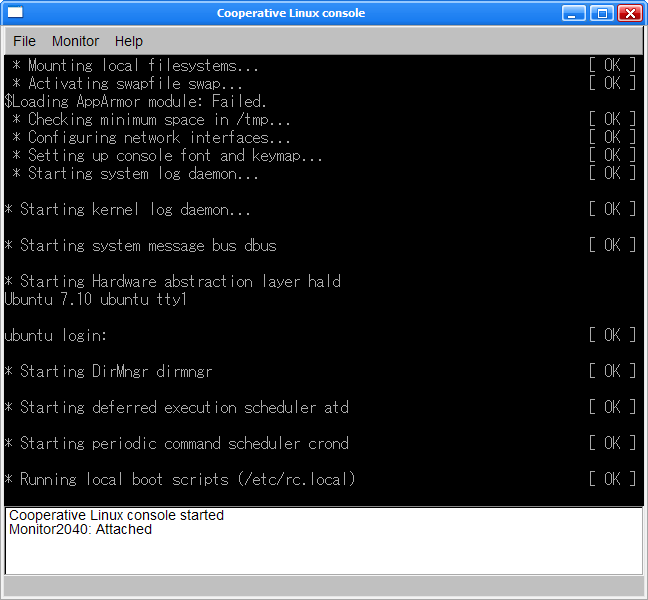

Vous avez depuis longtemps envie d'installer GNU/Linux mais vous n'en avez pas la possibilité du fait de certaines raisons techniques, professionnelles ou autres et vous pensez devoir vous contenter de Windows ?
Si vous voulez l'installer quand même, alors vous êtes à la bonne page. :D Tout cela grâce à coLinux (et XMing), que vous allez découvrir dans ce mini-tuto qui, je l'espère, vous sera utile en vous permettant de faire fonctionner Linux comme vous le feriez avec n'importe quelle application.
Le seul pré requis : un tout petit peu plus de 2 Go minimum d'espace libre sur votre disque dur mais à la fin de ce tuto, vous aurez normalement installé Ubuntu 7.10 avec KDE sur votre PC.
Pour faire court, coLinux est en fait un "portage" du noyau Linux qui lui permet de fonctionner sous Windows et qui est bien sûr libre et gratuit. Il permet d'utiliser les distributions Linux les plus courantes que sont Debian, Ubuntu, Fedora ainsi que Gentoo et ArchLinux.
Téléchargement & Installation de coLinux
On va commencer par télécharger coLinux depuis SourceForge, et quand j'ai fait ce tuto, la dernière version stable était la 0.7.3. J'ai donc cliqué sur "coLinux-stable" puis sur "coLinux-0.7.3.exe" pour télécharger l'installateur.
Vous pouvez maintenant démarrer l'installateur.
Au niveau des composants à installer, vous pouvez décocher les cases "Virtual Ethernet Driver" et "Bridged Ethernet" car vous n'en aurez pas besoin.
Vous allez maintenant pouvoir choisir quelle distribution de Linux vous voulez utiliser, cependant nous allons choisir "No download" car l'installateur ne nous propose pas toujours la dernière version de chaque distrib' supportée par coLinux. Nous allons donc la prendre sur SourceForge...
Enfin, lancez l'installation en cliquant sur "Install".
L'installaton de coLinux commence alors.
Pour récupérer Ubuntu, cliquez donc sur le lien de tout à l'heure puis, cette fois, sur "Images 2.6.x Ubuntu" et prenez la dernière version. J'ai ici choisi "Ubuntu-7.10.ext3.2GB.7z". Ce fichier est très fortement compressé car il ne pèse qu'une cinquantaine de Mo, mais une fois décompressé il est composé d'un fichier de 128Ko et un autre de... 2 Go ! :-° Et ces fichiers, il va falloir les décompresser dans un dossier de votre choix (vous pouvez utiliser le même qu'à l'installation). Pour ce faire, je vous conseille l'utilitaire 7zip. Je vous préviens, pendant la décompression vous avez le temps d'aller boire un café, enfin peut-être pas quand même ( +/- 5min suivant votre PC).
Non ! Non ! Partez pas ! Vous n'êtes pas encore tombés en enfer (bon, ok, ça va pas tarder)...
coLinux est un démon !
Eh oui ! coLinux est bel et bien ce que l'on appelle un démon. :diable:
Citation : Wikipedia
Un démon (ou daemon en anglais) désigne un type de programme informatique, un processus qui s'exécute en arrière-plan plutôt que sous le contrôle direct d'un utilisateur.
Le démon coLinux s'appelle... colinux-daemon, très logique me direz-vous... Mais un démon a besoin de savoir ce qu'il doit faire car, comme il travaille en arrière-plan, il n'a pas la possibilité de demander des infos à l'utilisateur et c'est là qu'entre en scène la ligne de commandes.
En fait, on va créer un fichier contenant la configuration et on va démarrer colinux-daemon en lui disant où se trouve ce fichier ! Ce fichier, on l'appellera coLinux.ini pour ne pas se compliquer la vie. :p
Donc direction le dossier où vous avez installé coLinux, et créé ce fichier. Pour l'instant il est vide, mais on va le remplir tout de suite !
Les trois premières lignes servent à initialiser coLinux en lui indiquant :
le nom du fichier avec la "vm" ;
le nom d'un fichier qui sert uniquement à préparer le terrain lors du premier lancement ;
et quel dispositif de stockage doit être monté en tant que root.
cobd0 correspond au fichier de 2 Go que vous avez extrait tout à l'heure ;
cobd1 correspond au fichier swap qui se trouvait dans la même archive que celui de 2 Go ;
cofs0 correspond à un dossier de Windows auquel vous souhaitez pouvoir accéder depuis Linux (dans mon exemple, le dossier Documents partagés de Windows XP) ;
eth0 correspond à la connexion Internet que devra utiliser coLinux. Je vous conseille de garder slirp sauf si vous avez installé un des deux autres drivers et que vous voulez l'utiliser.
Vous pouvez garder ce fichier sous la main car on s'en servira à nouveau plus tard !
Bon c'est bien beau de faire la configuration mais j'aimerais bien pouvoir l'utiliser pour faire fonctionner coLinux moi... Tu nous as toujours pas expliqué comment !
Il y a deux manières d'utiliser coLinux : soit en tant que programme normal, soit en tant que service... Nous verrons en détails les deux manières de procéder car elles ont toutes les deux leurs avantages et leurs inconvénients (vous verrez par vous-mêmes dans la suite). Mais avant tout, sachez que tout ce que nous avons mis dans un fichier, nous aurions pu l'écrire en tant qu'une commande, tout à la suite ! Vous imaginez ? J'ai préféré vous faire faire ce fichier car comme ça, le seul paramètre à donner sera @colinux.ini . Tout de suite, on trouve ça mieux, hein ? :)
Les services
Les services sont quelque chose d'assez abstrait pour beaucoup de personnes, car on ne les voit pas à moins d'aller chercher au bon endroit... En fait, il s'agit tout simplement de programmes qui sont "enregistrés" auprès de Windows pour pouvoir être démarrés facilement, ou même automatiquement avec Windows. Il s'agit principalemnt de composants internes de Windows mais n'importe quel programme peut s'y ajouter, comme par exemple un antivirus ou un anti-spyware... ;) Certains services sont indispensables au système, et si on les arrête avec le gestionnaire de tâches, il se peut que votre ordinateur redémarre subitement ! :o
Utiliser coLinux en tant que service
En tant que service, il y a plusieurs commandes à connaître !
Enregistrer le service
Ceci permet de l'utiliser en temps que service (sorte d'installation) : colinux-daemon --install-service "coLinux" @colinux.ini
Enlever le service
Ceci annule la commande précédente (sorte de désinstallation).
colinux-daemon --remove-service "coLinux"
Démarrer le service
net start "coLinux"
Arrêter le service
(Vous n'en aurez probablement pas besoin.) net stop "coLinux"
Utiliser coLinux en tant que programme normal
Dans ce cas-là, la démarche peut sembler plus simple/pratique bien qu'elle ne le soit pas vraiment. Il faut juste créer un raccourci vers le fichier colinux-deamon.exe et, une fois créé, éditer ses propriétés de la façon suivante. Dans l'onglet Raccourci, modifiez le champ Cible pour qu'il ressemble à ça (à adapter suivant le dossier d'installation bien sûr) : "C:\Program Files\coLinux\colinux-daemon.exe" "@colinux.ini"
Une histoire de consoles
Vous avez maintenant les clés en main pour démarrer coLinux avec Ubuntu... :p Mais ce n'est pas pour autant que je vais vous lâcher tout seuls face à la console coLinux bien qu'elle soit pas méchante ! D'ailleurs cette console coLinux, parlons-en un peu !
Les deux consoles de coLinux
Effectivement, coLinux vient avec deux consoles : FLTK et NT ! Eh oui ! Encore un choix entre deux options à faire ! Rassurez-vous, comme tout à l'heure, vous pouvez changer à tout moment sans problème ! Vous pouvez même utiliser coLinux 5 min avec l'une, la fermer et lancer l'autre pour continuer ce que vous faisiez avant (sans avoir éteint coLinux) !
Retournons à nos moutons, ou plutôt, nos consoles ! Les voici, les voilà :

FLTK, la console fournie avec coLinux.
NT, la console de Windows (qui propose un réglage de la taille/police des caractères contrairement à FLTK).
Je vous conseille d'utiliser FLTK si jamais vous avez coLinux en service mais plutôt NT sinon. Pourquoi ? Pour deux raisons très simples :
si vous utilisez coLinux en tant que simple programme, celui-ci va déjà ouvrir une console NT pour les messages du Kernel, FLTK ouvrirait alors une seconde fenêtre alors qu'on peut réutiliser celle déjà existante en choisissant la console NT ;
si vous avez coLinux en service, il ne lance par défaut aucune console donc autant choisir celle qui est faite pour coLinux, donc FLTK !
C'est bien beau de me dire ça ! Mais tu ne m'as pas dit comment faire pour choisir... >_
C'est vrai ? Ah ouais désolé... J'y viens !
Choisir sa console
Avec coLinux en service, choisir la console est tellement simple que c'en est frustrant. :lol: Il suffit de lancer soit le programme colinux-console-fltk.exe, soit colinux-console-nt.exe ! Vous n'avez qu'à vous faire des raccourcis !
Si vous n'avez pas mis coLinux en service, FLTK s'ouvrira par défaut, mais si vous préférez NT, direction le dossier coLinux. Créez un fichier .bat ou .cmd avec un nom de votre choix, ouvrez-le avec le bloc-notes et tapez ça dedans : colinux-daemon.exe @coLinux.ini -t NT
En avant, marche !
Voilà, ça y est, vous êtes enfin prêts pour entrer dans la grande aventure de Linux :pirate: (bon ok, l'installation était aussi une aventure ) ! Toutes mes félicitations, vous êtes autorisés à essayer vos raccourcis et vous apercevoir que vous vous êtes plantés et qu'il faut tout refaire que vous avez réussi à installer Linux sans toucher aux trucs dangereux comme les partitions !
Vous pouvez aller boire un café mais il n'est pas encore temps de sortir le champagne ! Vous n'avez qu'une console ! Même pas des jolies fenêtres de Linux qui vous disent bonjour !
Quelques commandes utiles :
ls
Affiche le contenu du dossier courant.
cd
Change le dossier courant.
nano
Deux éditeurs de texte.
vi
exit
Ferme la session et retourne à l'écran de login.
poweroff
Arrête Linux (et coLinux).
halt
Vous n'aimez pas rester dans le noir ? Alors, dans la prochaine partie, on va mettre des fenêtres pour que vous voyiez mieux ! :lol:
Non, le serveur X n'est pas un endroit où se cachent certains films ! :lol:
Citation : Wikipedia
X Window System (communément appelé X Window ou X11 ou plus simplement X) est un système qui gère l'interaction homme-machine par l'écran, la souris et le clavier de certains ordinateurs en réseau. C'est le système standard ouvert d'interaction graphique avec l'utilisateur sur les UNIX (Linux, BSD, etc.). Le serveur X est optionnel sur Mac OS X (qui utilise nativement Quartz).
Pour faire simple, c'est un dispositif qui permet d'afficher des fenêtres...
Pourquoi j'en aurais besoin, j'ai déjà des fenêtres dans Windows moi ?!
En effet, il existe un portage sous Windows du système de fenêtrage X appelé XMing et nous allons l'installer tout de suite.
Installation de XMing
C'est par ici (ou par là) que ça se passe. Vous pouvez laisser le dossier par défaut lors de l'installation. Vous pouvez également télécharger XLaunch_FR (à extraire dans le dossier d'installation) qui permet de choisir comment démarrer XMing, mais qui est dans la langue de Molière. Vous pouvez d'ailleurs mettre un raccourci vers celui-ci dans le menu démarrer, il vous sera sûrement utile si jamais vous avez besoin d'une configuration différente de celle par défaut...
Voilà, avec ça, vous pouvez afficher des fenêtres ! N'allez pas me dire que c'était compliqué ! :p
Configuration de XMing avec coLinux.ini
Vous pouvez démarrer XMing à l'aide de XLaunch_FR mais, faire ça à chaque fois, c'est un peu long ! Pour automatiser ça, on va se servir du fichier coLinux.ini que je vous avais demandé de garder sous la main. C'est là que va entrer en jeu la commande dont je ne vous avais pas parlé lorsque nous avons fait la configuration de coLinux ! Il faut que vous sachiez que XLaunch est fourni avec XMing pour la simple raison que XMing se configure avec la ligne de commandes, ce qui va bien nous arranger...
Cette fameuse option de coLinux est execX (où X est un nombre) ! Elle permet de lancer d'autres programmes automatiquement quand coLinux démarre ! Plutôt pratique, hein ? :D
"C:\Program Files\XMing\XMing.exe" est l'adresse du programme XMing sur votre disque dur (à adapter à votre dossier d'installation de XMing) ;
-clipboard permet que le presse-papier soit partagé entre Windows et coLinux (ce que vous copiez dans Windows peut être collé dans coLinux et inversement) ;
-multiwindow dit à XMing de créer une fenêtre pour chaque programme (voyez XLaunch_FR pour voir les 3 autres modes) ;
-ac enlève le contrôle d'accès au serveur X ;
-silent-dup-error permet de ne pas afficher de message d'erreur et de quitter en silence si une autre instance de XMing est déjà en cours d'exécution.
Où est le serveur X ?
Citation : coLinux
Où est-il ? Il a disparu ! Il nous l'a volé, il nous a volé le précieux !!! :colere: Non ? Ah... :euh: mais il est où alors ?
Enfin, tout ça pour dire que coLinux n'a aucune idée d'où on a mis son serveur X à moins que vous ne lui disiez ! C'est d'ailleurs ce que vous allez faire, mais pour ça, il faut connaître son adresse (son adresse IP, en l'occurrence). En fait, son adresse IP, c'est la vôtre ! Donc direction Menu démarrer, Exécuter et tapez "cmd" puis dans la console qui est apparue, "ipconfig". Vous verrez alors votre adresse IP.
On l'a retrouvé
Maintenant qu'on a son adresse, il faut la donner à coLinux ! Vous pouvez démarrer coLinux si ce n'est pas déjà fait !
Si vous n'avez pas touché aux réglages par défaut de votre connexion réseau, vous avez sûrement une adresse IP dynamique, sinon vous devez savoir si vous avez attribué une IP fixe à votre PC.
Avec une IP dynamique
Vous allez avoir, à chaque démarrage de coLinux, à taper une commande pour indiquer votre adresse IP à coLinux si vous comptez utiliser le serveur X... Cette commande, la voici (modifiez la suivant votre IP mais n'oubliez pas le :0.0 à la fin) :
export DISPLAY=192.168.1.5:0.0
Avec une IP fixe
Vous avez de la chance, une fois ce petit réglage fait, vous n'aurez plus rien à faire ! Tapez donc la commande suivante dans coLinux :
nano /etc/environment
Vous arrivez donc dans l'éditeur Nano avec le fichier /etc/environment ouvert. Ajoutez une ligne à la fin avec le contenu suivant (à modifier suivant votre IP) :
DISPLAY=192.168.1.5:0.0
Et voilà !
Bon, c'est bien beau tout ça mais ça va pas suffire. Afficher des fenêtres c'est bien mais c'est mieux quand y a quelque chose dedans. :-° Direction la prochaine étape, installer KDE !
Comment ça ? Vous en avez marre de mon baratin ? Bon, eh bien, passons à la pratique !
On va commencer par... lancer XMing avec des options différentes de celles qu'on a mises dans le démarrage automatique ! En fait, on va lancer XMing en plein écran... Démarrez donc XLaunch_fr, choisissez Plein écran et faites 3 fois Suivant puis Terminer ! XMing se lance donc en plein écran et... vous n'y voyez plus rien ! Faites alors Alt-Tab pour retourner voir vos autres fenêtres de Windows. Maintenant, lancez coLinux puis tapez les commandes suivantes (j'ai utilisé les commentaires pour vous décrire chacune des commandes) :
apt-get update
#Mise à jour de la liste des "paquets" disponibles
apt-get upgrade
#Mise à jour de tous les "paquets" installés
apt-get install kde
#Installation de KDE !
apt-get install kde-i18n-fr
#Ajout du support du français
Chacune d'entre elles est susceptible de vous demander des confirmations car il va télécharger des trucs parfois lourds. Validez-les en tapant Y puis en appuyant sur entrée. À la fin de l'installation, tapez "startkde". Des choses vont apparaître sur la fenêtre de XMing que vous allez donc afficher devant vous. Vous allez alors avoir à choisir la langue que vous voulez puis à vous laisser guider. ;)
Une fois cela effectué, KDE va être lancé automatiquement et vous aurez alors Ubuntu avec KDE en face de vous. Si jamais vous remarquez que l'écran se fige pendant quelques secondes trop souvent, c'est sûrement que votre ordinateur est un peu lent pour faire tourner KDE en plein écran (ce n'est pas si gênant que ça, je parle d'expérience... ) !
Sinon, vous pouvez modifier coLinux.ini pour, dans la ligne de lancement de XMing, changer -multiwindow en -fullscreen ! En fait, -fullscreen permet qu'au lieu d'ouvrir une fenêtre pour chaque programme séparé, XMing n'ouvre qu'une fenêtre qui va recevoir KDE (KDE gérant dans ce cas là lui-même les fenêtres) !
Néanmoins, avant de changer ce petit réglage, lancez la commande "kcontrol" et, dans la liste de gauche, cliquez sur l'élément dont l'icône est composée de drapeaux, puis sur celui qui vient d'apparaître avec la même icône. Enfin, dans le panneau de droite, changez les réglages concernant la langue puis validez. Vous avez maintenant KDE en français ! :D
Cette annexe concerne le partage d'un dossier avec Windows... Vous savez... ce(s) petit(s) cofsX=### dans le fichier coLinux.ini.
Ce que vous vous demandez sûrement, c'est où atterrissent ces fichiers quand vous lancez coLinux. Ce n'est pas compliqué, ils sont dans /mnt/cofsX mais il faut les "monter" pour y accéder. ;) Si vous utilisez juste cofs0, alors vous n'avez besoin de rien faire car il est automatiquement monté dans le dossier /opt !
Si vous utilisez cofs1 ou plus, faites donc ceci :
mkdir /root/Partage
Cela crée un dossier Partage dans votre dossier root. C'est dans ce dossier qu'on va "monter" cofsX et on va le faire de la façon suivante :
nano /etc/fstab
Vous arrivez dans l'éditeur de texte Nano dans lequel vous allez pouvoir ajouter une ligne correspondant à cofsX en prenant celle avec cofs0 comme modèle (modifiez juste la 1ère et la 2ème colonne).
Une fois la manipulation effectuée et le fichier sauvegardé, vous n'avez plus qu'a redémarrer coLinux avec un "reboot" et le tour est joué ! :D
J'ai le regret de vous annoncer que vous venez d'arriver à la fin de ce tuto fort en émotions ! :lol: Je ne vois pas vraiment l'utilité de vous faire un QCM alors dites-vous que vous avez de la chance...
J'espère que vous avez eu autant de plaisir à me lire que moi j'en ai eu à vous raconter cette (plutôt longue) histoire qu'est l'installation de coLinux avec XMing/KDE.
Profitez bien de ceux-ci et de leurs fonctionnalités et @+ pour de nouvelles aventures numériques !
PS : je suis bien sûr ouvert à toute remarque, positive ou négative, et suis prêt à répondre à toutes vos questions sur des points que vous trouveriez confus ou avec lesquels vous avez du mal.
PPS : je vous conseille fortement de lire le tuto de M@teo21 concernant Linux qui est très bien fait, très clair et vous aidera beaucoup une fois passées les explications sur l'installation de Linux (puisque vous l'avez déjà installé, mais d'une autre manière ) car le fonctionnement est le même ! :D